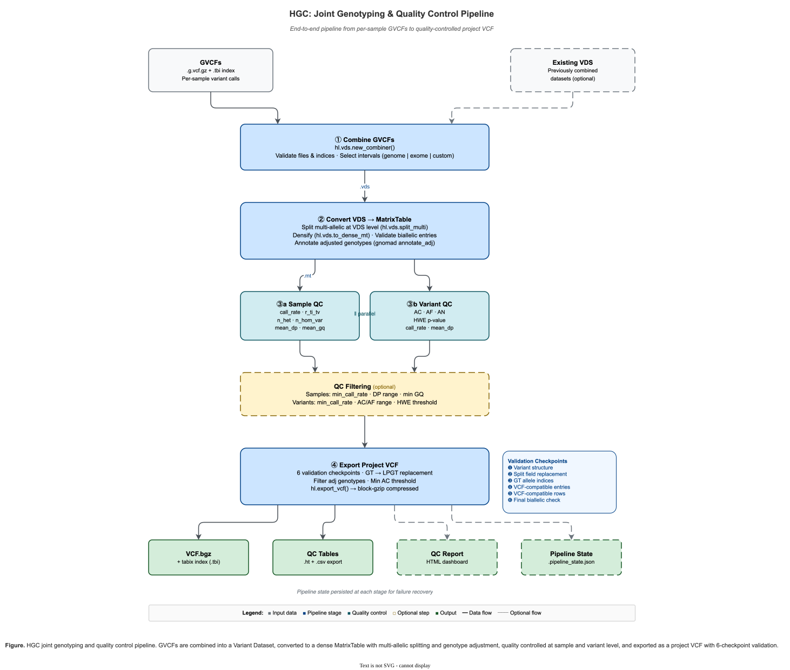

HGC: Hail-based Genotype Combiner¶
HGC is a module within hvantk that provides high-performance tools for joint genotyping workflows using Hail. It enables efficient combination of genomic variant call format (GVCF) files, conversion between different Hail data formats (VDS, MatrixTable), and export to standard VCF format.

Figure 1. HGC joint genotyping pipeline — from GVCF combination through format conversion, quality control, and validated VCF export.
Overview¶
The HGC module implements a complete joint genotyping pipeline with integrated quality control:
Primary Functionality¶
Pipeline Orchestration (Recommended) - End-to-End Automation - Single command runs gVCF → VDS → MT → QC → pVCF workflow - Flexible Resumption - Skip completed stages to resume from any point - Integrated QC - Optional quality filtering and HTML report generation - State Persistence - Automatic checkpointing for error recovery
Individual Component Commands (Advanced)
- GVCF Combination - Combine multiple single-sample GVCF files into a unified Variant DataSet (VDS)
- VDS Operations - Merge multiple VDS datasets and convert between formats
- MatrixTable Processing - Convert VDS to analysis-ready MatrixTable format
- VCF Export - Export processed data back to standard VCF format
Additional Functionality: Quality Control & Visualization¶
- QC Metrics Computation - Comprehensive sample and variant quality assessment on combined cohorts
- QC Table Export - Sample and variant QC metrics as pandas DataFrames, ready to plot with matplotlib or any plotting library
- QC Reports - Professional HTML reports with embedded plots and recommendations
- QC-based Filtering - Quality-based sample and variant filtering tools
Key Features¶
Pipeline Orchestration¶
- Single-Command Workflows: Run complete gVCF → pVCF pipeline with one command
- Smart Resumption: Skip completed stages to recover from errors or resume processing
- Integrated QC: Built-in quality filtering and HTML report generation
- State Management: Automatic checkpointing with JSON state files
- Dry-Run Mode: Preview execution plan before running
Core Joint Genotyping Features¶
- Scalable Joint Genotyping: Efficiently combine thousands of GVCF files using Hail's optimized combiner
- Flexible Data Formats: Work with VDS (storage-optimized) and MatrixTable (analysis-optimized) formats
- Multi-allelic Handling: Automatic splitting and normalization of multi-allelic variants
- Genotype Annotation: Built-in support for adjusted genotype annotations
Quality Control Features (Post-Combination)¶
- Comprehensive QC Metrics: Sample and variant-level quality assessment for combined cohorts
- Exported QC Tables:
get_sample_metrics_df()/get_variant_metrics_df()return pandas DataFrames you can plot directly with matplotlib - Professional Reports: HTML reports with embedded plots, metrics, and recommendations
- Quality-based Filtering: Threshold-based sample and variant filtering tools
Interface Options¶
- CLI and Python API: Use via command-line interface or directly in Python scripts
Quick Start¶
Command-Line Interface¶
End-to-End Pipeline (Recommended)¶
For most users, the pipeline command provides the easiest way to run the complete workflow:
# Run complete pipeline: gVCF → VDS → MT → QC → VCF
hvantk hgc pipeline \
-i /path/to/gvcfs \
-o /path/to/output
# With QC filtering and HTML report
hvantk hgc pipeline \
-i /path/to/gvcfs \
-o /path/to/output \
--apply-qc-filters \
--min-sample-call-rate 0.95 \
--generate-qc-report
# View execution plan without running
hvantk hgc pipeline \
-i /path/to/gvcfs \
-o /path/to/output \
--dry-run
See Pipeline Orchestration for detailed documentation.
Tuning combiner parallelism (--import-interval-size)¶
Hail's gVCF combiner partitions the import by even genomic intervals, and derives one partition per interval. The interval size therefore sets a ceiling on how many cores can do useful work in the combine stage — the stage that dominates joint-genotyping runtime.
The default is Hail's genome default of 1.2 Mb, which is sized for whole-genome gVCFs. For a region-restricted run (a single chromosome, an exome, a gene panel) it can produce far fewer partitions than you have cores, leaving most of them idle:
| Input region | Partitions at the 1.2 Mb default |
|---|---|
| chr20 (64.4 Mb) | 54 |
| chr1 (249.0 Mb) | 208 |
| whole genome (3.1 Gb) | ~2,584 |
Rule of thumb: keep partitions at roughly 2–4× your total core count. If you run chr20 on 128 cores with the default, ~74 cores have nothing to do — which looks like "the tool doesn't scale" but is purely a partitioning artefact.
# chr1 on a 128-core cluster: 600 kb -> 415 partitions (~3x cores)
hvantk hgc gvcf-combine -g /path/to/chr1_gvcfs -o cohort.vds \
--import-interval-size 600000
# The same knob on the recommended end-to-end pipeline
hvantk hgc pipeline -i /path/to/chr1_gvcfs -o /path/to/out \
--import-interval-size 600000
Related tuning options (available on both gvcf-combine and pipeline):
| Option | Meaning | Hail default |
|---|---|---|
--import-interval-size |
Interval size (bp); one partition per interval | 1.2 Mb (genome) |
--use-exome-default-intervals |
Use Hail's exome interval size | 60 Mb |
--gvcf-batch-size |
gVCFs merged per tree-merge batch | 50 |
--branch-factor |
Branch factor of the hierarchical merge | 100 |
--import-interval-size and --use-exome-default-intervals are mutually exclusive.
Individual Component Commands¶
For advanced users who need fine-grained control, HGC provides individual commands:
Core Joint Genotyping Commands:
# View available commands
hvantk hgc --help
# Combine GVCF files
hvantk hgc gvcf-combine -g /path/to/gvcfs -o combined.vds
# Combine VDS datasets
hvantk hgc vds-combine -i /path/to/vds_dir -o merged.vds
# Convert VDS to MatrixTable
hvantk hgc vds2mt -i combined.vds -o analysis.mt
# Export MatrixTable to VCF
hvantk hgc mt2vcf -i analysis.mt -o results.vcf.gz
Quality Control Commands (Post-Combination):
Additional QC commands for analyzing combined cohorts:
# Compute QC metrics for combined cohort
hvantk hgc compute-qc -i analysis.mt -o analysis_qc.mt
# Generate comprehensive QC report
hvantk hgc qc-report -i analysis_qc.mt -o qc_report.html
# Filter based on QC metrics
hvantk hgc filter-qc -i analysis_qc.mt -o filtered.mt --min-sample-call-rate 0.95
Standalone QC plotting/dashboard CLI support has been retired. qc-report produces
a self-contained HTML report with embedded plots; for ad hoc or custom plots, export
the QC metrics to a DataFrame in Python and plot with matplotlib directly (see
Quality Control Functions below).
Python API¶
Core Joint Genotyping Functions¶
Use HGC functions directly in Python:
from hvantk.algorithms.hgc import (
combine_gvcfs,
combine_vdses,
convert_vds_to_mt,
convert_mt_to_multi_sample_vcf
)
# Combine GVCF files into VDS
combine_gvcfs(
gvcf_dir="/path/to/gvcfs",
vds_output_path="output.vds",
tmp_path="/tmp/hail",
save_path="combiner_plan.json",
vdses=[],
kwargs={}
)
# Convert VDS to MatrixTable
convert_vds_to_mt(
vds_path="output.vds",
output_path="analysis.mt",
adjust_genotypes=True,
skip_split_multi=False,
skip_validation=False
)
Quality Control Functions (Post-Combination)¶
Additional QC functionality for combined cohorts:
from hvantk.algorithms.hgc import compute_full_qc, filter_samples_by_qc, filter_variants_by_qc
# Load combined MatrixTable
import hail as hl
mt = hl.read_matrix_table("analysis.mt")
# Compute comprehensive QC metrics
qc_results = compute_full_qc(mt)
# Generate a self-contained HTML report (recommended for a full overview)
qc_results.generate_html_report('qc_report.html')
# Or plot directly from the exported QC tables with matplotlib
import matplotlib.pyplot as plt
sample_df = qc_results.get_sample_metrics_df()
fig, ax = plt.subplots()
ax.hist(sample_df["sample_qc.call_rate"], bins=30)
ax.axvline(0.85, color="red", ls="--", label="min call rate")
ax.set_xlabel("Sample call rate")
ax.legend()
fig.savefig("call_rate.png", dpi=300, bbox_inches="tight")
# Apply quality filters
mt_filtered = filter_samples_by_qc(
qc_results.mt,
min_call_rate=0.95,
min_ti_tv_ratio=1.8
)
mt_filtered = filter_variants_by_qc(
mt_filtered,
min_call_rate=0.90,
min_hwe_pvalue=1e-6
)
Pipeline Orchestration (Recommended)¶
For end-to-end workflows, use the Pipeline API:
from hvantk.algorithms.hgc.pipeline import PipelineConfig, PipelineRunner
# Create configuration
config = PipelineConfig(
input_dir="/data/gvcfs",
output_dir="/data/output",
apply_qc_filters=True,
min_sample_call_rate=0.95,
generate_qc_report=True
)
# Run pipeline
runner = PipelineRunner(config)
runner.show_plan() # Optional: preview execution
state = runner.run()
# Check results
print(f"Outputs: {state.outputs}")
See Pipeline Orchestration for detailed documentation.
Core Components¶
1. Pipeline (hvantk.algorithms.hgc.pipeline)¶
Recommended - End-to-end workflow orchestration:
PipelineConfig- Configuration dataclass with validationPipelineRunner- Orchestration engine with dry-run supportPipelineState- State tracking with JSON save/loadPipelineStage- Enum of pipeline stages
See Pipeline Orchestration for detailed usage.
2. Combiners (hvantk.algorithms.hgc.combiners)¶
Functions for combining genomic datasets:
combine_gvcfs()- Combine GVCF files and/or existing VDS datasets into a new VDScombine_vdses()- Merge multiple VDS directories into a single VDS
Advanced functions (require direct import from hvantk.algorithms.hgc.combiners):
- combine_matrix_table_rows() - Combine MatrixTables by rows (variants)
- combine_matrix_table_cols() - Combine MatrixTables by columns (samples)
3. Converters (hvantk.algorithms.hgc.converters)¶
Functions for format conversion:
convert_vds_to_mt()- Convert VDS to dense MatrixTable formatconvert_mt_to_multi_sample_vcf()- Export MatrixTable to multi-sample VCF
4. File Utilities (hvantk.algorithms.hgc.file_utils)¶
Helper functions for file handling:
validate_vcfs_paths()- Validate GVCF files and their indicesvalidate_vds_paths()- Validate VDS directory pathscheck_path_exists_and_readable()- Verify file accessibilitycompress_files()/decompress_files()- Handle file compressionsort_mts_cols()- Sort MatrixTable columns to match reference order
Detailed Usage¶
GVCF Combination¶
Combine single-sample GVCF files into a joint-called VDS:
CLI:
hvantk hgc gvcf-combine \
--gvcf-dir /data/gvcfs \
--output cohort.vds \
--temp-dir /tmp/hail \
--save-path combiner_plan.json
Python:
from hvantk.algorithms.hgc import combine_gvcfs
combine_gvcfs(
gvcf_dir="/data/gvcfs",
vds_output_path="cohort.vds",
tmp_path="/tmp/hail",
save_path="combiner_plan.json",
vdses=[], # Optional: existing VDS to include
kwargs={
# Optional interval parameters (mutually exclusive):
# 'use_genome_default_intervals': True,
# 'use_exome_default_intervals': True,
# 'intervals': [list of intervals]
},
reference_genome="GRCh38"
)
Parameters:
- gvcf_dir: Directory containing .g.vcf.gz files with .tbi indices
- vds_output_path: Output path for the combined VDS
- tmp_path: Temporary directory for intermediate files
- save_path: Path to save the combiner execution plan (JSON)
- vdses: List of existing VDS paths to combine with GVCFs
- kwargs: Additional parameters for hail.vds.new_combiner()
- reference_genome: Reference genome build (default: "GRCh38")
Requirements:
- GVCF files must have corresponding .tbi index files
- Sufficient temporary storage (typically 2-3x input size)
- Adequate memory for Hail operations
VDS Combination¶
Merge multiple VDS datasets:
CLI:
hvantk hgc vds-combine \
--input-dir /data/vds_datasets \
--output merged.vds \
--validate \
--overwrite
Python:
from hvantk.algorithms.hgc import combine_vdses
combine_vdses(
vdses_dir="/data/vds_datasets",
output_path="merged.vds",
validate=True,
overwrite=False
)
Parameters:
- vdses_dir: Directory containing VDS subdirectories (each ending in .vds)
- output_path: Output path for merged VDS
- validate: Whether to validate the combined VDS using Hail's validator
- overwrite: Whether to overwrite existing output
VDS to MatrixTable Conversion¶
Convert storage-optimized VDS to analysis-ready MatrixTable:
CLI:
Python:
from hvantk.algorithms.hgc import convert_vds_to_mt
convert_vds_to_mt(
vds_path="cohort.vds",
output_path="analysis.mt",
adjust_genotypes=True,
skip_split_multi=False,
skip_validation=False,
skip_keying_by_cols=False,
overwrite=False
)
Parameters:
- vds_path: Input VDS path
- output_path: Output MatrixTable path
- adjust_genotypes: Annotate with adjusted genotypes using gnomAD quality filters (no extra install needed)
- skip_split_multi: Skip splitting multi-allelic variants (not recommended)
- skip_validation: Skip the biallelic audit and genotype repair (see below)
- skip_keying_by_cols: Skip keying MatrixTable by sample column
- overwrite: Whether to overwrite existing output
Important Notes:
- The VDS-level split already produces biallelic GT/AD — no manual LGT→GT downcoding is needed
- Adjusted genotype annotation needs no extra dependency: annotate_adj is ported from
gnomad_methods (MIT) into hvantk/algorithms/hgc/adj.py, with gnomAD's published
thresholds kept verbatim (GQ >= 20, DP >= 10, AB >= 0.2, haploid DP >= 5)
The densify runs exactly once¶
This stage is dominated by densification: expanding the VDS's reference blocks back into a full
samples × sites matrix. Hail is lazy and does not cache, so every eager action on the dense
MatrixTable — an aggregate_entries, a count, a write — re-executes the whole densify from
the top.
convert_vds_to_mt is therefore written so that only the final write touches the dense
matrix:
- the biallelic audit (out-of-bounds
GTindices,ADlength mismatches) runs on the sparsevariant_data, before densification. That is where such defects can originate: reference blocks are hom-ref by construction and carry noAD, so densification cannot introduce either defect. - the repair (setting an out-of-bounds genotype to missing) is applied as a lazy, unconditional expression on the dense matrix. It fuses into the write, and on clean data it is the identity.
Gating the repair behind if n_invalid > 0 would look harmless but is not: reading that count is
an eager action, so it forces an entire extra densify of the cohort. On a 500-sample chr1 callset
that mistake cost ~42% of the stage's wall time.
--skip-validation turns off both the audit and the repair. The audit is cheap (it scans only the
sparse variant records), so there is rarely a reason to.
MatrixTable to VCF Export¶
Export processed MatrixTable to standard VCF format:
CLI:
hvantk hgc mt2vcf \
--input analysis.mt \
--output results.vcf.gz \
--filter-adj \
--min-ac 1 \
--split-multi
Python:
from hvantk.algorithms.hgc import convert_mt_to_multi_sample_vcf
convert_mt_to_multi_sample_vcf(
mt_path="analysis.mt",
vcf_path="results.vcf.gz",
filter_adj_genotypes=True,
min_ac=1,
split_multi=True
)
Parameters:
- mt_path: Input MatrixTable path
- vcf_path: Output VCF file path
- filter_adj_genotypes: Filter to adjusted genotypes only (recommended)
- min_ac: Minimum alternate allele count for variant inclusion
- split_multi: Split multi-allelic variants (if not already split)
VCF Info Fields:
The output VCF includes standard INFO fields:
- AF: Allele frequency
- AC: Allele count
- AN: Total number of alleles
- call_rate: Variant call rate
Pipeline Orchestration¶
The HGC Pipeline provides end-to-end workflow orchestration from gVCF files to cohort VCF with integrated quality control. This is the recommended approach for most users.
Overview¶
The pipeline orchestrates five stages:
- Combine gVCFs → VDS (Variant Dataset)
- Convert VDS → MatrixTable
- Compute Sample QC metrics
- Compute Variant QC metrics
- Export → Project VCF (pVCF)
Each stage can be skipped for flexible workflow resumption.
Basic Usage¶
# Run complete pipeline
hvantk hgc pipeline \
-i /data/gvcfs \
-o /data/output
# With QC filtering and reporting
hvantk hgc pipeline \
-i /data/gvcfs \
-o /data/output \
--apply-qc-filters \
--min-sample-call-rate 0.95 \
--min-variant-call-rate 0.90 \
--generate-qc-report
# View execution plan (dry run)
hvantk hgc pipeline \
-i /data/gvcfs \
-o /data/output \
--dry-run
Key Features¶
- End-to-End Automation: Single command runs the complete workflow
- Stage Skipping: Resume from any intermediate stage
- QC Integration: Optional quality filtering before export
- State Persistence: Automatic checkpointing for recovery
- Flexible Configuration: 20+ options for customization
Common Workflows¶
1. Standard Pipeline with QC¶
hvantk hgc pipeline \
-i /data/gvcfs \
-o /data/output \
--output-prefix my_cohort \
--apply-qc-filters \
--generate-qc-report
Output:
- my_cohort.vds/ - Combined variant dataset
- my_cohort.mt/ - MatrixTable
- my_cohort_filtered.mt/ - QC-filtered MatrixTable
- my_cohort.vcf.bgz - Final cohort VCF
- qc/my_cohort_qc_report.html - QC report
2. Resume from Existing VDS¶
hvantk hgc pipeline \
-i /data/gvcfs \
-o /data/output \
--skip-combine-gvcfs \
--vds-path /data/existing.vds
3. QC-Only Analysis¶
hvantk hgc pipeline \
-i /data/gvcfs \
-o /data/qc_analysis \
--skip-export-pvcf \
--generate-qc-report
4. Resume After Error¶
# If pipeline fails, check state
cat /data/output/.pipeline_state.json
# Resume from last successful stage
hvantk hgc pipeline \
-i /data/gvcfs \
-o /data/output \
--skip-combine-gvcfs \
--vds-path /data/output/cohort.vds \
--overwrite
Configuration Options¶
Required:
- -i, --input-dir - Directory containing gVCF files
- -o, --output-dir - Output directory
Stage Control:
- --skip-combine-gvcfs - Skip Stage 1 (requires --vds-path)
- --skip-vds-to-mt - Skip Stage 2 (requires --mt-path)
- --skip-compute-sample-qc - Skip Stage 3
- --skip-compute-variant-qc - Skip Stage 4
- --skip-export-pvcf - Skip Stage 5
Quality Control:
- --apply-qc-filters - Apply QC filters before export
- --min-sample-call-rate FLOAT - Minimum sample call rate (default: 0.85)
- --min-variant-call-rate FLOAT - Minimum variant call rate (default: 0.85)
- --generate-qc-report - Create HTML QC report
Processing:
- --reference-genome [GRCh37|GRCh38] - Reference build (default: GRCh38)
- --n-partitions INT - Partitions for parallel processing
- --tmp-dir PATH - Temporary directory
- --overwrite - Overwrite existing files
- --output-prefix TEXT - Output filename prefix (default: cohort)
Utility:
- --dry-run - Show execution plan without running
Output Structure¶
output_directory/
├── cohort.vds/ # Stage 1: Combined VDS
├── cohort.mt/ # Stage 2: MatrixTable
├── cohort_filtered.mt/ # Filtered MT (if --apply-qc-filters)
├── cohort.vcf.bgz # Stage 5: Cohort VCF
├── qc/
│ ├── cohort_sample_qc.ht # Stage 3: Sample QC
│ ├── cohort_sample_qc.csv
│ ├── cohort_variant_qc.ht # Stage 4: Variant QC
│ ├── cohort_variant_qc.csv
│ └── cohort_qc_report.html # HTML Report
├── logs/
│ └── pipeline_*.log
└── .pipeline_state.json # State for recovery
Python API¶
from hvantk.algorithms.hgc.pipeline import PipelineConfig, PipelineRunner
# Configure pipeline
config = PipelineConfig(
input_dir="/data/gvcfs",
output_dir="/data/output",
output_prefix="my_cohort",
apply_qc_filters=True,
min_sample_call_rate=0.95,
min_variant_call_rate=0.90,
generate_qc_report=True,
reference_genome="GRCh38"
)
# Validate configuration
errors = config.validate()
if errors:
for error in errors:
print(f"Error: {error}")
exit(1)
# Create and run pipeline
runner = PipelineRunner(config)
runner.show_plan() # Preview execution
state = runner.run()
# Check results
if state.errors:
print(f"Pipeline failed: {state.errors}")
else:
print(f"Success! Outputs: {state.outputs}")
Performance Tips¶
Memory Management:
# For large cohorts (>1000 samples)
export PYSPARK_SUBMIT_ARGS='--driver-memory 32g --executor-memory 32g'
hvantk hgc pipeline -i /data/gvcfs -o /data/output --n-partitions 1000
Disk Space: - VDS: ~1-2x input gVCF size - MatrixTable: ~0.5-1x VDS size - pVCF: ~0.5-1x MatrixTable size
Typical Runtime (varies by hardware and cohort size): - 100 samples: ~30-60 minutes - 500 samples: ~2-4 hours - 1000 samples: ~4-8 hours
Data Formats¶
GVCF (Genomic VCF)¶
- Single-sample variant calls with reference blocks
- Format:
.g.vcf.gzwith.tbiindex - Input format for joint genotyping
VDS (Variant DataSet)¶
- Hail's storage-optimized format for genomic data
- Separates reference data from variant data
- Efficient for large cohorts
- Directory structure ending in
.vds
MatrixTable (MT)¶
- Hail's analysis-optimized format
- Dense matrix representation
- Rows: variants, Columns: samples
- Directory structure ending in
.mt
VCF (Variant Call Format)¶
- Standard genomic variant format
- Compatible with most genomic tools
- Format:
.vcf.gzwith optional.tbiindex
Performance Considerations¶
Memory Requirements¶
- GVCF combination: ~8-16 GB for small cohorts (<100 samples)
- Large cohorts (>1000 samples): 32-64 GB recommended
- Set Hail memory with environment variable:
export PYSPARK_SUBMIT_ARGS="--driver-memory 32g"
Storage Requirements¶
- Temporary space: 2-3x input GVCF size
- VDS output: ~50-70% of input GVCF size
- MatrixTable: ~100-150% of VDS size
Optimization Tips¶
- Use SSD storage for temporary files
- Adjust Hail partitioning for your cluster size
- Process intervals in parallel for large cohorts
- Use genome/exome default intervals for better performance
Common Options¶
Interval Selection¶
When combining GVCFs, you can specify genomic intervals:
# Use default genome intervals (recommended for WGS)
kwargs = {'use_genome_default_intervals': True}
# Use default exome intervals (recommended for WES)
kwargs = {'use_exome_default_intervals': True}
# Specify custom intervals
kwargs = {'intervals': [
hl.parse_locus_interval('chr1:1-1000000'),
hl.parse_locus_interval('chr2:5000000-6000000')
]}
Reference Genomes¶
Supported reference genomes:
- GRCh38 (default) - Human genome build 38
- GRCh37 - Human genome build 37
Troubleshooting¶
Common Issues¶
Issue: "Cannot convert LGT to GT when skip_split_multi=True"
Solution: Either enable multi-allelic splitting or disable LGT conversion:
convert_vds_to_mt(..., skip_split_multi=False)
# OR
convert_vds_to_mt(..., skip_validation=True)
Issue: "Out of memory during GVCF combination"
Issue: "TBI index file not found"
Examples¶
Example 1: Incremental Cohort Building¶
from hvantk.algorithms.hgc import combine_gvcfs, combine_vdses
# First batch
combine_gvcfs(
gvcf_dir="data/batch1",
vds_output_path="output/batch1.vds",
tmp_path="tmp",
save_path="output/batch1_plan.json",
vdses=[],
kwargs={}
)
# Second batch
combine_gvcfs(
gvcf_dir="data/batch2",
vds_output_path="output/batch2.vds",
tmp_path="tmp",
save_path="output/batch2_plan.json",
vdses=[],
kwargs={}
)
# Merge batches
combine_vdses(
vdses_dir="output", # Contains batch1.vds and batch2.vds
output_path="output/merged.vds",
validate=True,
overwrite=False
)
Example 3: Custom Quality Filtering¶
import hail as hl
from hvantk.algorithms.hgc import convert_vds_to_mt
# Convert VDS to MT
convert_vds_to_mt(
vds_path="cohort.vds",
output_path="cohort.mt",
adjust_genotypes=True
)
# Read MT and apply custom filters
mt = hl.read_matrix_table("cohort.mt")
# Filter to high-quality variants
mt = mt.filter_rows(
(mt.info.AC > 2) & # At least 2 alternate alleles
(mt.variant_qc.call_rate > 0.95) # 95% call rate
)
# Filter to high-quality samples
mt = mt.filter_cols(
mt.sample_qc.call_rate > 0.90 # 90% sample call rate
)
# Write filtered MT
mt.write("cohort_filtered.mt")
API Reference¶
For detailed parameter descriptions, usage examples, and notes, see Detailed Usage and Pipeline Orchestration.
Main Functions¶
| Function | Description | Returns |
|---|---|---|
combine_gvcfs(gvcf_dir, vds_output_path, tmp_path, save_path, vdses, kwargs, reference_genome='GRCh38') |
Combine GVCF files into a VDS. See GVCF Combination. | None |
combine_vdses(vdses_dir, output_path, validate=True, overwrite=False) |
Merge multiple VDS directories. See VDS Combination. | None |
convert_vds_to_mt(vds_path, output_path, adjust_genotypes=True, skip_split_multi=False, skip_validation=False, skip_keying_by_cols=False, overwrite=False) |
Convert VDS to dense MatrixTable. See VDS to MatrixTable Conversion. | None |
convert_mt_to_multi_sample_vcf(mt_path, vcf_path, filter_adj_genotypes=True, min_ac=1, split_multi=True) |
Export MatrixTable to VCF. See MatrixTable to VCF Export. | None |
Utility Functions¶
| Function | Description | Returns |
|---|---|---|
validate_vcfs_paths(directory, pattern=None) |
Retrieve and validate GVCF file paths | List[str] |
validate_vds_paths(vdses) |
Validate VDS directory paths | List[str] |
check_path_exists_and_readable(path) |
Verify file accessibility | str |
sort_mts_cols(mts, ref_index=0) |
Sort MatrixTable columns to match reference | List[hl.MatrixTable] |
Advanced Functions¶
These functions require direct import from hvantk.algorithms.hgc.combiners:
| Function | Description | Returns |
|---|---|---|
combine_matrix_table_rows(mt_paths, output_path, n_partitions, force_sort_cols=False, overwrite=False, kwargs=None) |
Combine MatrixTables by rows (variants) | None |
combine_matrix_table_cols(mt_paths, output_path, n_partitions, overwrite=False, kwargs=None) |
Combine MatrixTables by columns (samples) | None |
Constants¶
The module defines commonly used constants in hvantk.algorithms.hgc.constants:
Reference Genomes:
- HG38_GENOME_REFERENCE - "GRCh38"
- HG37_GENOME_REFERENCE - "GRCh37"
File Extensions:
- GVCF_EXTENSION - ".g.vcf.gz"
- GVCF_EXTENSION_TBI - ".g.vcf.gz.tbi"
- VCF_EXTENSION - ".vcf.gz"
- VCF_EXTENSION_TBI - ".vcf.gz.tbi"
- VDS_EXTENSION - ".vds"
Entry Fields:
- GT_FIELD - "GT" (Genotype)
- AD_FIELD - "AD" (Allelic depths)
- DP_FIELD - "DP" (Read depth)
- GQ_FIELD - "GQ" (Genotype quality)
- PL_FIELD - "PL" (Phred-scaled likelihoods)
- PID_FIELD - "PID" (Physical phasing ID)
- SB_FIELD - "SB" (Strand bias)
- MIN_DP_FIELD - "MIN_DP" (Minimum read depth)
- ADJ_GT_FIELD - "adj" (Adjusted genotype flag)
Note: MatrixTable files use the .mt extension, but this is a directory structure convention rather than a defined constant in the module.
References¶
See Installation for setup, Contributing for development workflow.